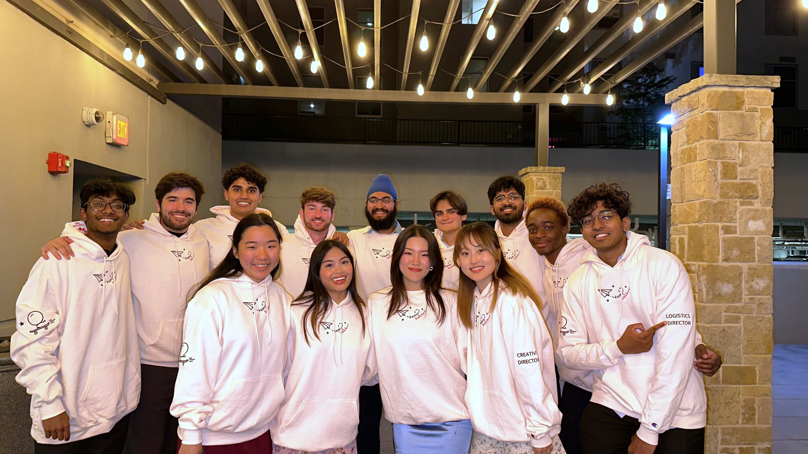

Volunteer Service
TAMUhack Director
TAMUhack
is a student organization that hosts two annual hackathons at Texas A&M University! TAMUhack is dedicated to providing hackers with a space and opportunity to learn while creating an awesome project of their own.
-
HowdyHack:
Hosts a free beginner-focused, Aggie-only hackathon in the fall semester that is focused on introducing new, inexperienced coders to fundamental computer science topics. Provides accessible mentoring throughout the whole event.
-
Workshop events:
Presents career, education and networking focused workshops for participants to learn a broad spectrum of topics, interact with peers, and advance their careers.
-
Internal mentoring:
Works 1:1 with a new member to guide them through the logistics of the organization and being their point of contact for any questions they have.
AWiCS
AWiCS
stands for Aggie women in Computer Science. It's a Texas A&M University student organization focused on building a community of students interested in technology and empowering women.
-
Rubies:
Works as a big/mentor to another AWiCS underclassmen member.
